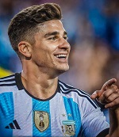

|  | Julian AlvarezProfessional football player |
Julian Alvarez is a professional football player who plays for premier league champions Manchester city.He was born in 1999 in a small city in Argentinal.
Full name:Julian Alvarez
Date Of Birth:31st of January 2000
Place of Birth:Cordoba,Argentina
Alvarez started his playing career in Atletico Calchin,before he joined River Plate in 2016.He made his debut in 2018 for River plate in a 1-0 win against Aldosivi.He scored his first goal for River Plate in a 3-0 win over Independiente.
On May 25 2022 Alvarez scored 6 goals for River Plate in a 8-1 win over Alianza Lima in the copa libertadores
On January 31 2022,Alvarez joined city from River Plate on a 5 year contract.He made his debut and scored in a 1-3 defeat to rivals Liverpool in the community shield.On August 7,Alvarez made his premier league debut.He scored a brace for city in a 6-0 win over Nottingham Forest at the Etihad stadium
Alvarez scored his first international goal in a 1-1 draw against Ecuador .He represented his country in 2020 at the CONMEBOL with Argentina winning the title.
Alvarez was selected his Argentina's 26 man squad for the 2022 FIFA world cup Qatar.He scored 4 goals in the tournament.He was involved in Argentina second goal has they defeated France in the final